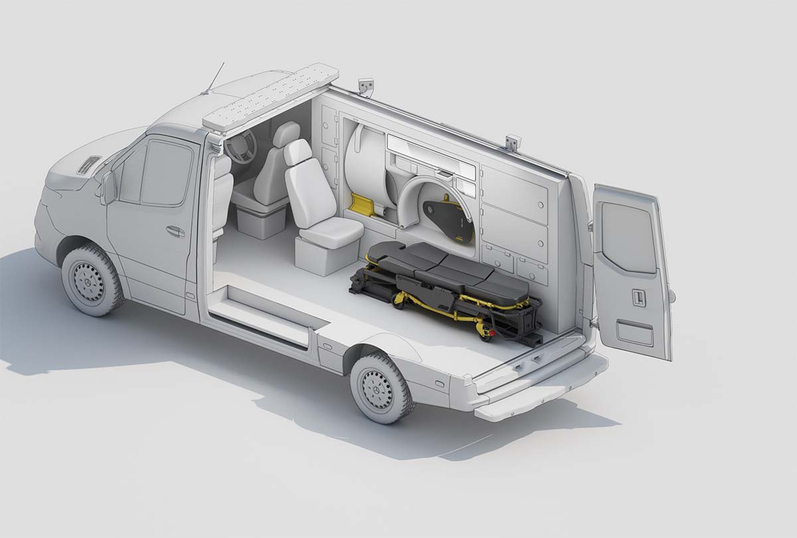

Instruction
Point the camera at the exhibition poster.
Hello!
This is an AR showcase of the Mobile Stroke Imager workflow, in partnership with Micro-X Ltd.
Micro-X’s ‘Ring Scanner’ technology aims to provide comparable diagnostic imaging to a conventional head CT scanner in a unit intentionally designed to be small enough and at a price point where one can be fitted in every ambulance.

Loading....